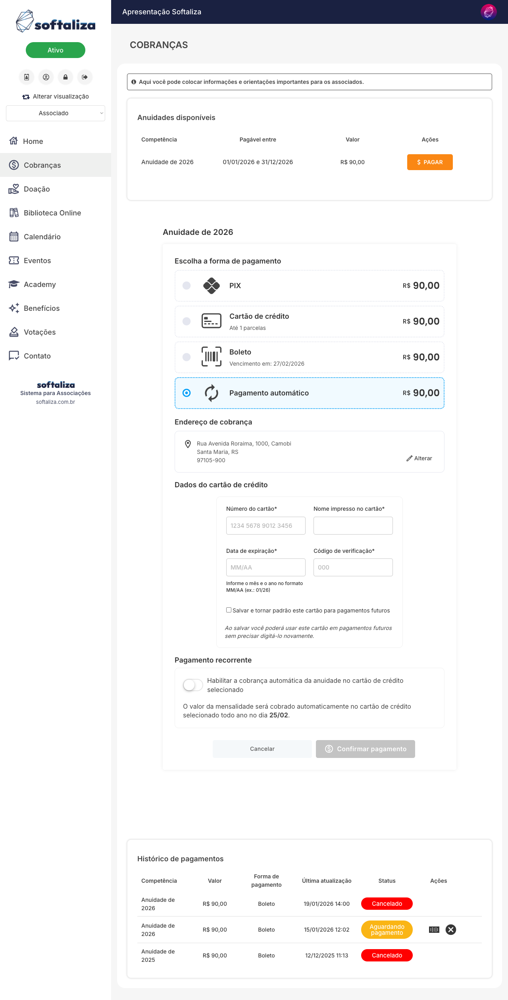
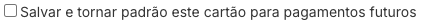
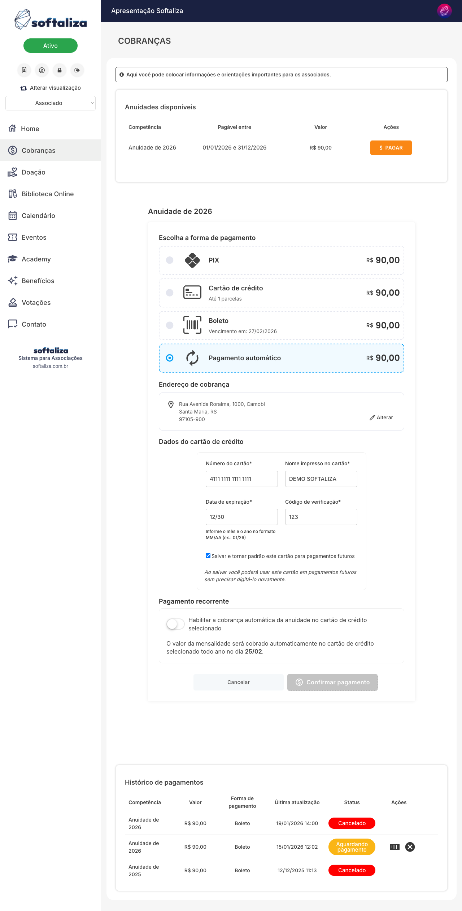
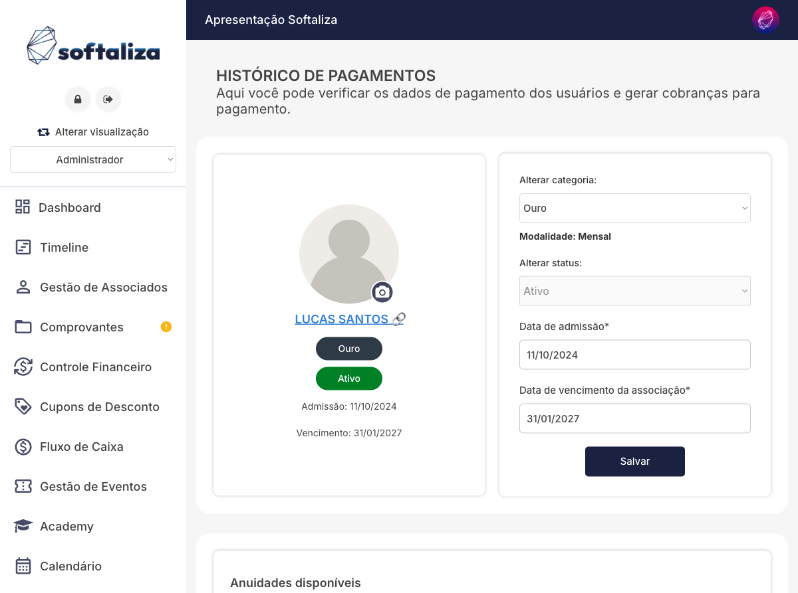
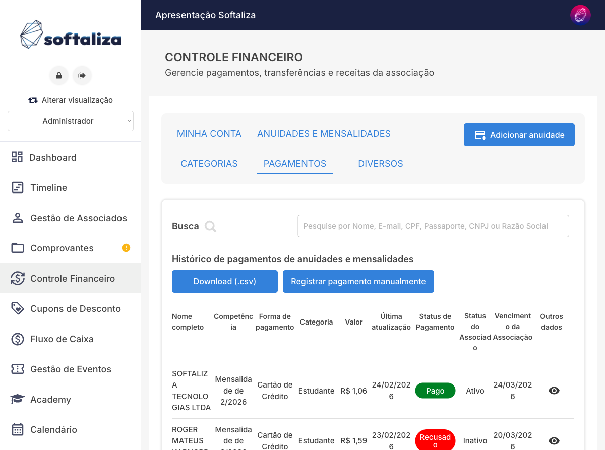
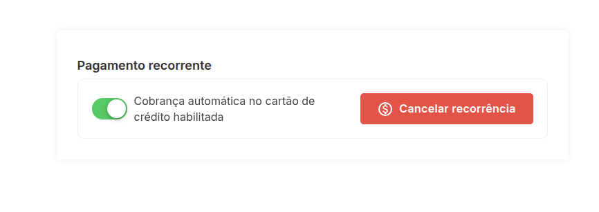
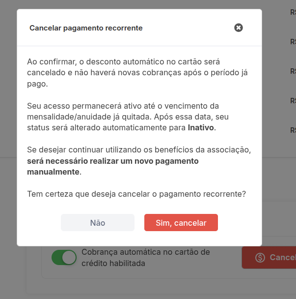

Pagamento automático por cartão (recorrência)
Este tutorial apresenta, de forma objetiva, como funciona a recorrência por cartão no ambiente de demonstração da Softaliza. A funcionalidade permite que a associação cobre automaticamente mensalidades ou anuidades no cartão do associado, conforme a configuração financeira da categoria.
1) Como o associado ativa a recorrência
Na área restrita do associado, acesse Cobranças e clique em Pagar na competência disponível. Em seguida, selecione Pagamento automático.
Quando a categoria estiver configurada com múltiplos meios, o sistema exibirá também PIX, boleto e cartão avulso. Se a associação optar por recorrência exclusiva na modalidade, o associado verá somente a opção automática.

2) Como salvar o cartão para uso futuro
Ao preencher os dados do cartão, marque a opção de armazenamento para não precisar redigitar em cobranças futuras.
Esse comportamento reduz atrito na renovação e melhora a continuidade da cobrança automática em ciclos seguintes.

3) Confirmação da adesão recorrente
Com os dados preenchidos e a recorrência habilitada, avance para Confirmar pagamento.
No ambiente real, após autorização da transação, o sistema passa a aplicar a regra da modalidade: cobrança mensal para mensalidades e renovação anual para anuidades.

4) Onde visualizar a recorrência no associado
No painel administrativo, em Gestão de Associados > Histórico de pagamentos do associado, é possível consultar dados cadastrais e cobranças vinculadas ao perfil.
Essa área é o ponto recomendado para suporte validar categoria/modalidade, status do associado e contexto da cobrança antes de qualquer ajuste.

5) Onde visualizar a recorrência no financeiro
Em Controle Financeiro > Pagamentos, a associação acompanha os lançamentos, forma de pagamento e status (ex.: pago, recusado, aguardando).
Com essa visão consolidada, o time consegue acompanhar o desempenho da recorrência e agir rapidamente em casos de falha de cobrança.

6) Como cancelar a recorrência
Quando a recorrência já está ativa, o associado pode cancelar diretamente na seção Pagamento recorrente, clicando no botão Cancelar recorrência.

Após clicar em cancelar, o sistema abre um modal de confirmação explicando os efeitos do cancelamento: não haverá novas cobranças automáticas após o período já pago, o acesso permanece ativo até o vencimento atual e, para continuar depois disso, será necessário realizar novo pagamento manual.

Para concluir, o usuário confirma em Sim, cancelar.
Observação: este passo está documentado com base na interface exibida no sistema e no texto de confirmação apresentado em tela.